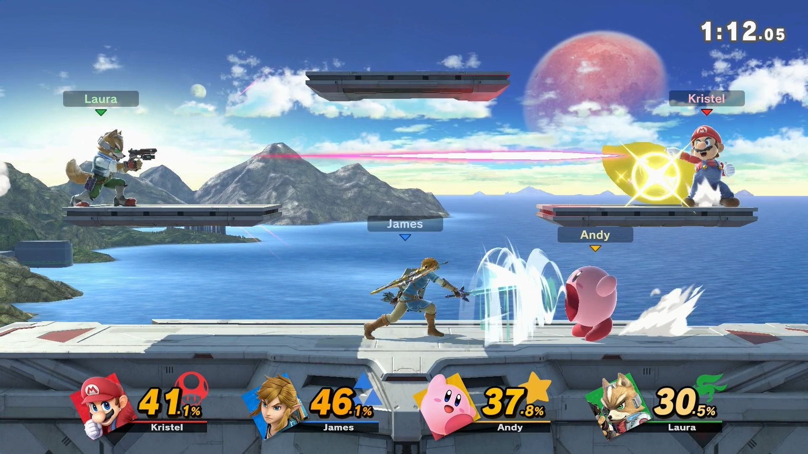

SMASH BROS
Esta es una saga de videojuegos creada por Masahiro Sakurai y desarrollada por Nintendo en el año 1999 para la consola Nintendo 64
Esta saga de videojuegos tiene como principal caracteristica el reunir a varios personajes de videojuegos, tanto creados por Nintendo como por otras empresas. Creando asi el mayor crossover por exelencia de la industria de los videojuegos y del entretenimiento.
Cuando Sakurai tuvo y propuso la idea de un juego de peleas entre los mayores personajes representantes de los videojuegos rapidamente fue rechazada por los directivos de Nintendo por el hecho de no ser amigable para el publico y por usar a personajes que claramente no pelearian entre ellos de acuerdo a su personalidad. Sin embargo Sakurai no se quedaria con las ganas de ver ese proyecto terminado y a escondidas de Nintendo desarrollo el mismo su videojuego y fue ahi que decidio intentar de nuevo convencer a los directivos, y aunque aun no les terminaba de agradar la idea decidieron aceptarla por su gran inovacion en la jugabilidad y en el apartado visual. Si bien aun estaba la inquietud de ver pelear a personajes que no lo harian de acorde a sus videojuegos, la manera en la que Sakurai habia logrado capturar su escencia de cada personaje en sus ataques y movilidad fue suficiente para pasar por alto este ¨pero¨ y aceptar definitivamente su propuesta de Sakurai.
Ahora que ya estaba decidido el proyecto lo unico que faltaba era que Nintendo solicitara las licencias y permisos de los personajes que aparecerian en el ambicioso proyecto y temian ser rechazados por la tematica principal del videojuego. Sorpresivamente para Sakurai y Nintendo ninguna empresa se nego y al contrario les fascino la idea de ver pelear a personajes como Mario y Sonic o Samus y Kirby.

Finalmente fue lanzado para la consola Nintendo 64 en 1999 y sorpresivamente llego a ser una de las ip mas vendidas de Nintendo incluso llegando a ser el videojuego de peleas del año, logrando un gran acierto por parte de Masahiro Sakurai.
Conforme avanzaron los juegos de Smash Bros aun mas personajes se unian al plantel de personajes siendo el ultimo el Super Smash Bros Ultimate que contiene en su plantel 82 personajes de videojuegos.
Gracias a tener demasiados personajes se han logrado inclusiones casi imposibles como Sephiroth de Final Fantasy o Steve de Minecraft e incluso muy posiblemente la mas imposible de todas, Sora de Kingdom Hearts.

No hay duda de cual es el mayor crossover de videojuegos y una de las mejores ip de Nintendo que a mas de uno nos emociona ver las referencias de los personajes que incluso nos acompañaron desde nuestra infancia, y ahora tenerlos de regreso es algo sin presedentes.